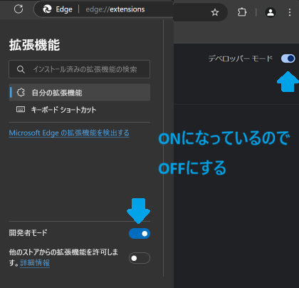

AndroidでViolentmonkeyを入れた人はここからViolentmonkeyも削除してください。
EdgeとChromeの人はデベロッパーモードもオフにします。chrome://extensions をアドレスバーにコピペして、Chromeなら右上、Edgeなら左下に出るデベロッパーモード(開発者モード)をオフにしてください。

終わったら次のページから拡張機能をインストールしてください。